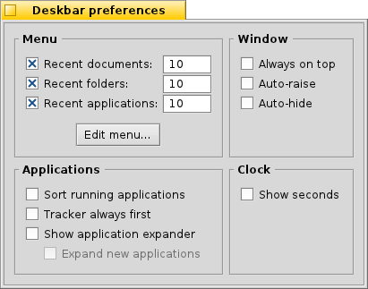

中文 ［中文］
中文 ［中文］ Français
Français Deutsch
Deutsch Italiano
Italiano Русский
Русский Español
Español Svenska
Svenska 日本語
日本語 Українська
Українська Português
Português Suomi
Suomi Slovenčina
Slovenčina English
English| 索引 |
|
桌面栏菜单 系统托盘 运行程序列表 |
桌面栏
桌面栏是默认放置在屏幕右上角的小面板，类似于windows的带着开始菜单的任务栏。它包含了桌面栏菜单，通过它您可以启动应用程序和首选项，时钟托盘和其他系统工具，以及底部运行中的程序列表。

你通过把鼠标点击在系统托盘有纹饰的一侧，然后进行拖拽，把桌面栏移动到屏幕的任意角落或者展开放置在屏幕的顶部和底部边界；你也自己设计一个更紧凑的菜单布局，然后把它拖拽至桌面栏菜单。
 桌面栏菜单
桌面栏菜单
点击桌面栏顶部会打开一个菜单：

About This System... - 展示了有关Haiku操作系统，Haiku项目的许可证和致谢名单等的基本信息。
Find... - 打开 查询 会话框。
Show Replicants - 显示或者隐藏 Replicant 微控件，您可以对它进行随意的拖动，删除或者访问它的快捷菜单。
Mount - 提供了和右键点击桌面时相同的选项。（详细介绍请查阅 挂载磁卷）。
Deskbar Preferences... - 打开桌面栏的首选项面板（详情见下面的介绍）。
Shutdown - 提供了 和 选项。
Recent Documents, Folders, Applications - 显示最近打开的文档，文件夹和应用程序 (详情见下面的 介绍)。
Applications, Demos, Deskbar Applets, Preferences - 分别列出了所有安装的应用程序，演示程序，小程序和首选项（详情见下面的 介绍）。
桌面栏首选项

菜单
在这里您可以设置桌面栏菜单中最新的文档，文件夹和程序的数量，或者您可以选择查看所有的最新信息。
按钮用于打开文件夹 /boot/home/config/be/ 。在该文件夹下，您可以看到桌面栏中出现的所有文件和文件夹。默认设置下，这些包括： ，，，以及 。
您可以通过向这些文件夹复制或者删除程序快捷式，文档，甚至查询来添加或者删除有关的入口。您甚至可以简单的将文件，文件夹，或者保存的查询直接拖拽到桌面栏中的某个位置。
窗口
桌面栏将会总是置顶放置。 鼠标点击之后，桌面栏在前端显示。 桌面栏缩减为几个像素，当鼠标点击时才会弹出。 应用程序
按字母排序运行中程序的列表。 即使按字母排序，Tracker 仍总是放置在列表的首部。 提供一个微控件来显示/隐藏桌面栏中程序入口下的所有窗口。 最新启动的程序在桌面栏中程序入口下自动展开其窗口。 时钟
为时钟添加秒的显示。 时钟显示日期星期缩写。
系统托盘

在其他方面，系统托盘可以停靠时钟。在其上悬停鼠标将会在工具提示中显示当前日期。左键点击用于切换时间和日期，右键点击用于显示/隐藏时钟，或者启动 Time 首选项对其进行相关设置。
任何程序都可以在系统托盘上安装图标，从而为用户提供一个接口。 例如，当您有未读邮件时，邮件系统将会显示一个不同的标志，提供一个右键菜单用于创建或者检查新邮件。ProcessController 也是个典型的例子，它同样在系统托盘中使用自己的图标来显示相关信息（CPU/内存的使用情况），并且还提供了右键菜单用于相关的操作。
运行程序

您可以通过在桌面栏中点击特定的运行程序，然后从子菜单中选择它的窗口来进入该程序。使用右键点击，您可以最小化，或者关闭程序的窗口或者整个程序。
如果您在桌面栏设置中激活了扩展，您可以直接展开/折叠程序入口下的窗口列表。
在每个程序窗口前都有一个标志用于提供它的运行状态。较亮的标志表明该窗口是可见的，而较暗的标志表明该窗口已被最小化。标志前的三个线条表明该窗口不属于当前的工作区。